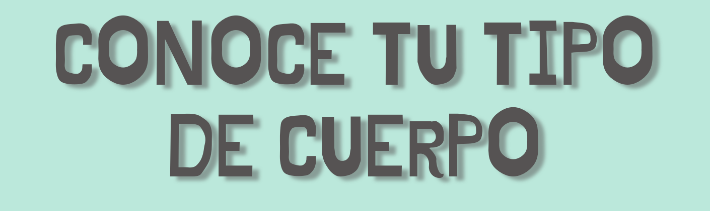
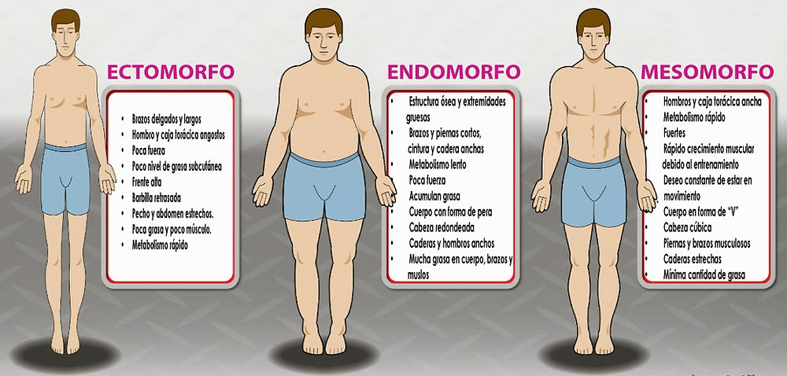
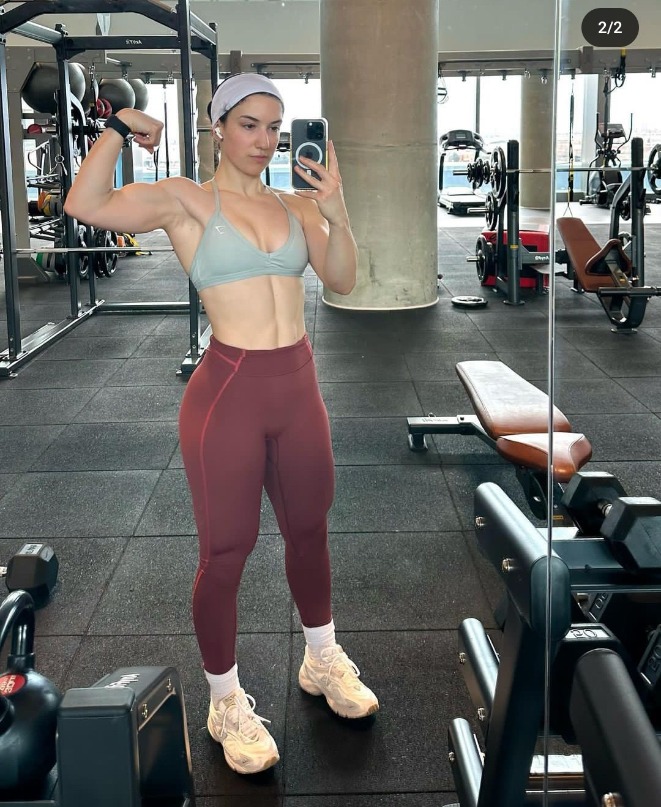
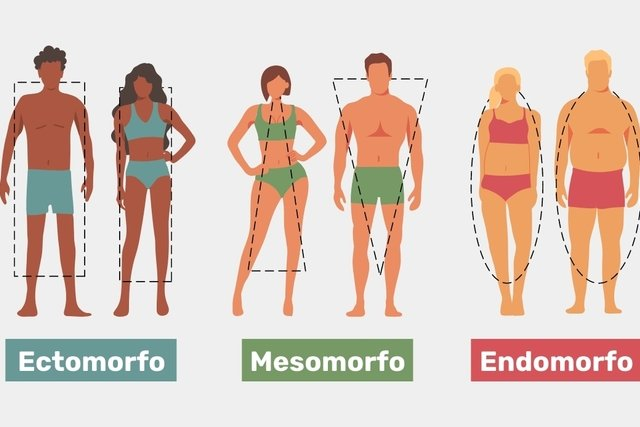
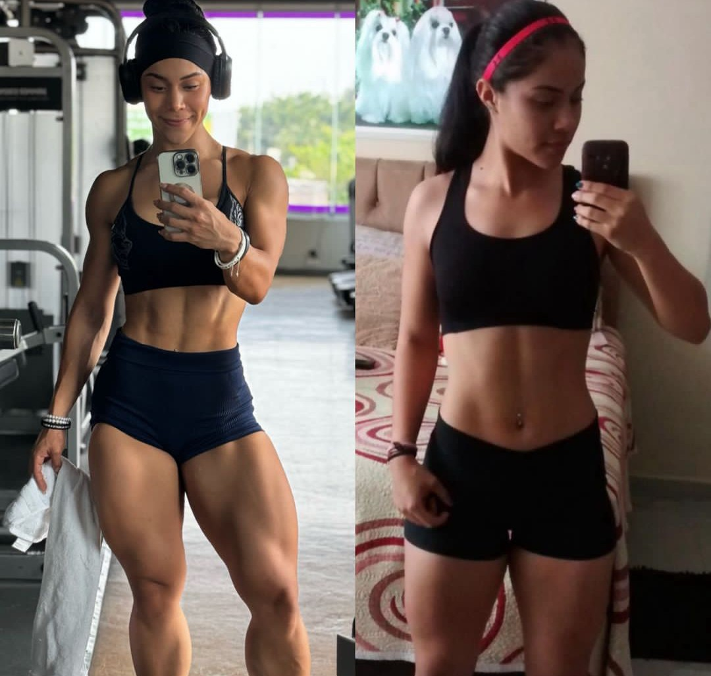

R.MENU


Las personas de este grupo generalmente son muy delgadas con brazos y piernas largos, pero finos, con musculos robustos y hombros estrechos. Tienen tambien como caracteristica singular poca grasa corporal, huesos bastante densos, pectoral plano (sin volumen), dificultad para ganar peso y metabolismo muy acelerado. Ademas, sus huesos sobresalen en relacion a los mUsculos y la grasa, lo que hace que, incluso en periodos sin actividad fisica, no pierdan definicion.
Las personas con cuerpo mesomorfo son las consideradas portadoras de una «buena genetica». Esto es, porque normalmente tienen una estructura osea mas grande, con tipo atletico. Naturalmente fuertes, la gente con este patron corporal son ideales para la practica de pesas, ya que ganan masa muscular con facilidad. Las principales caracteristicas son: hombros anchos, cintura fina, porte atletico, musculos mas definidos, facilidad para ganar grasa, ademas de un formato corporal rectangular
Las personas con cuerpo Endomorfo son aquellas que con facilidad ganan grasa. Sus principales caracteristicas son: fisico grande, brazos cortos y piernas anchas. Se caracterizan por tener musculos fuertes y potentes, especialmente en las piernas, y tienen gran potencial para ser deportistas. Tienen metabolismo lento, facilidad en ganar musculos y gran dificultad para adelgazar. Cuando la persona desea adquirir masa magra y perder grasa, su alimentacion debe ser hipocalorica (baja en calorias), con foco en el consumo de proteinas.

